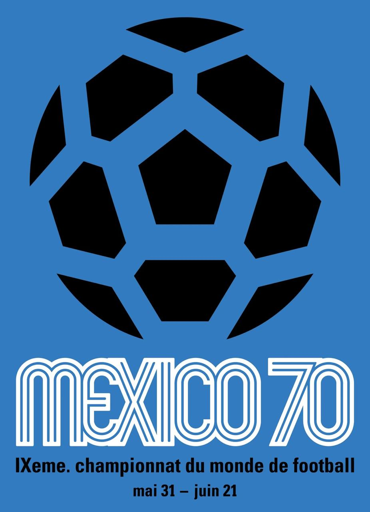

Sedes de la copa mundial
El Mundial ha sido organizado por países de todos los continentes, con Europa y
América del Sur liderando en número de ediciones:
| Año | Imagen | Sede | Campeón |
|---|---|---|---|
| 1930 | Uruguay | Uruguay | |
| 1950 | Brasil | Uruguay | |
| 1966 | Inglaterra | Inglaterra | |
| 1970 |  |
México | Brasil |
| 1978 | Argentina | Argentina | |
| 1994 |  |
Estados Unidos | Brasil |
| 2002 | Corea-Japón | Brasil | |
| 2010 | Sudáfrica | España | |
| 2014 | Brasil | Alemania | |
| 2018 | Rusia | Francia | |
| 2022 | Catar | Argentina | |
| 2026 | EE. UU., Canadá y México | - |
La edición de 2026 marcará la primera vez que tres países coorganizan el evento, y también la primera vez que la Copa se celebra en tres naciones de América del Norte simultáneamente.